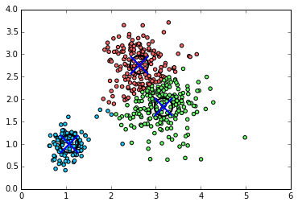

K Means Clustering
Python code for KMeans
import numpy
import matplotlib
matplotlib.use('Agg')
from scipy.cluster.vq import *
import matplotlib.pyplot as plt
%matplotlib inline
# generate 3 sets of normally distributed points around
# different means with different variances
pt1 = numpy.random.normal(1, 0.2, (100,2))
pt2 = numpy.random.normal(2, 0.5, (300,2))
pt3 = numpy.random.normal(3, 0.3, (100,2))
# slightly move sets 2 and 3 (for a prettier output)
pt2[:,0] += 1
pt3[:,0] -= 0.5
xy = numpy.concatenate((pt1, pt2, pt3))
# kmeans for 3 clusters
res, idx = kmeans2(numpy.array(zip(xy[:,0],xy[:,1])),3)
colors = ([([0.4,1,0.4],[1,0.4,0.4],[0.1,0.8,1])[i] for i in idx])
# plot colored points
plt.scatter(xy[:,0],xy[:,1], c=colors)
# mark centroids as (X)
plt.scatter(res[:,0],res[:,1], marker='o', s = 500, linewidths=2, c='none')
plt.scatter(res[:,0],res[:,1], marker='x', s = 500, linewidths=2)
Output:
